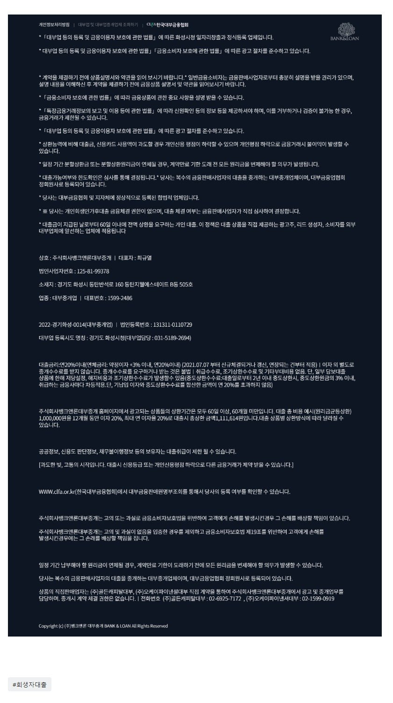

[승인률매우높은회생자대출] U상품 승인 사례 모음. *특장점안내*
[승인률매우높은회생자대출] U상품 승인사례 소개.
1. 회생면책1년미만 4대가입직장인, 기대출 대부 3건통합 및 추가필금3백만원 총 1400만승인.
2. 회생중 미납3.4회, 미납총액 629만, 미납정리 및 생활자금으로 1500만 승인.
3. 아주최근에 3700만원 받은 대출이 있어서 타사 모두 부결된 회생중인 4대가입 직장인, 300만원 승인.
4. 월변제금 고액, 미납2회 미납총액 796만, 최근 G사 부결고객. 미납정리와 대부한건대환 및 추가생활자금으로 2000만원 승인.
5. 회생 36회차중 13회차 미납2회. 기대출 밀리언 유노스 각 1천씩 사용중. 중견기업 15년이상재직중. 3천만 승이되어서 대출대환 및 미납정리와 생활자금마련에 성공.
6. 회생면책 1년미만, 4대가입직장인. 기대출 총2천만. 대부 2건대환및 추가자금마련으로 1300만 승인됨.
7. 한달반전 대부에서 1000만 받은고객. 추가필요자금 1천이라서 대출건수 안늘리며 대환+필금1천만 해서 깔끔하게 한건 2천으로 승인.
8. 직장 건보료 4회미납. 기대출 두건에 2천만 사용중인 회생자분, 2300만 승인되어 채무 건수 안늘리고 생활자금 마련에 성공.
이 외에도 타사 부결된 고객님들 많이 승인되고 있으며 승인한도도 매우 큰편입니다. 무서류 사전의뢰후 아직 한건도 본심사 부결이 없습니다. 승인률 정말 좋습니다. 통장거래내역 복잡하게 확인하거나 문제 삼는거 없는거 같습니다.
자격조건
1. 4대가입직장인 및 프리랜서 재직기간 만3개월 이상. (4대미가입직장인, 사업자, 주부님들은 접수불가.)
2. 변제현황조회필수.
3. 면책자는 면책후 1년이내 가능.
특장점.
1 최대한도 : U 2000만 +T 2000만, 총2000만. (회생적립금대비 130%, 연소득대비 100% 이내.)
2. 타사들은 연소득이 아무리 높아도 부채총액이 높으면 안해주는데..
U는 1-2건 대환해서라도 한도를 맥스로 내줄 수 있다고 함.
3. 무서류 사전의뢰가능. (사전의뢰 승인시 본심사 승인률 매우 높음)
4. 기존 사용자도 추가대출로 접수가능.
5. 심사진행 굉장히 빠름.
뱅크앤론매니저의 연락처는 010-2506-2425 [(주)뱅크앤론 사장 김용혁] 입니다~ 제 번호 저장후 카톡주시거나 전화 주시면 매우 친절하고 신속하게 필요한 도움 드리겠습니다. (상담가능시간 : 월~목 09시~18시 / 금 09시~16시)
또는 아래 상담신청하는 링크 클릭하셔서 상담신청 남겨 주시면, 업계 최고의 실력을 갖춘 당사의 전문 상담직원들 통해서 매우 친절하고 신속한 도움 받으실 수 있습니다. 감사합니다.^^
상담신청 -> https://cafe.naver.com/cityman88/29497 
[출처] [승인률매우높은회생자대출] U상품 승인 사례 모음. *특장점안내* (뱅크앤론 - 개인회생자대출 및 일반 신용, 담보 대출. 뱅크앤론) | 작성자 뱅크앤론 매니저